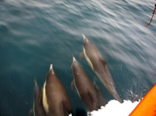
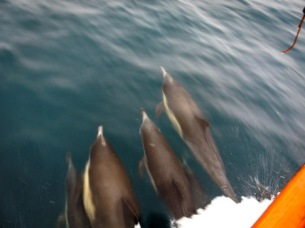
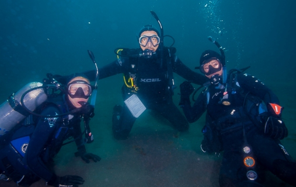
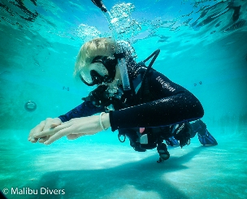
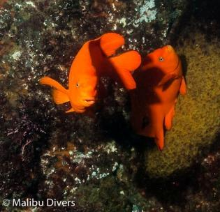

By Zorianna Kit
Los Angeles, CA – February 6, 2016 - Southern California’s reputation as a surfing destination has been around for decades, first cemented in Hollywood movies like 1959’s Gidget and Beach Blanket Bingo, and with bands like The Beach Boys’ whose first three albums in the 1960s - Surfin Safari, Surfin’ USA and Surfer Girl, became synonymous with California’s youth lifestyle.
But as I recently discovered during a scuba trip to Anacapa Island with PADI scuba diving store Malibu Divers, not only are the waves amazing, but also what lies beneath them.
But as I recently discovered during a scuba trip to Anacapa Island with PADI scuba diving store Malibu Divers, not only are the waves amazing, but also what lies beneath them.
Full disclosure: I’m embarrassed to admit I didn’t know there were islands off Southern California. To me, islands conjure up images of the Caribbean or French Polynesia. Clearly I had a lot to learn.

Anacapa Island is one of eight islands that make up the state’s Channel Islands. Five of those, including Anacapa, are national parks and their waters are a protected marine sanctuary. For scuba divers, it’s an opportunity to see some amazing creatures in the kelp forests beneath the surface.
At the same time, sea lions appeared, bobbing in and out of the water, much as the dolphins did, as seagulls circled overhead. There were fish about and everyone was hungry. One sea lion caught my eye because each time he burst out of the water, he turned his head quickly to the left and right before diving back down. I’m not sure if he was tracking the fish, or his friends, but I loved that I could see his methods.
My adventure to Anacapa was in conjunction with getting an advanced PADI certification with the Peak Performance Buoyancy Course. The idea is to refine one’s buoyancy skills to the point where the diver uses mostly their breath to fine tune their neutral buoyancy, and even ascend or descend, not their BCD inflator.
I woke up on a Sunday morning at 5 am and drove about an hour to Ventura Harbor where I boarded The Peace Dive Boat. Some of the divers had arrived the night before; good thing the Peace also has plenty bunks for overnight trips. A hot and cold breakfast spread was already laid out and by 7 am we set off.

Anacapa is about 8 miles out—a 90 minute ride. Wild dolphins raced alongside the boat, swimming off the bow’s push. It’s like surfing for them, a game they loved to play as we moved along the water at top speed.

Anacapa is about 8 miles out—a 90 minute ride. Wild dolphins raced alongside the boat, swimming off the bow’s push. It’s like surfing for them, a game they loved to play as we moved along the water at top speed.
Then, as if in slow motion, two humpback whales – a mother and calf – gently and gracefully briefly broke the surface. We held our breaths each time they emerged, and exhaled only when the last bit of their Y-shaped tails disappeared from view. Frantically, we scanned the water hoping to catch them if they reappeared.
It was our lucky day. Whales surrounded the boat. Water shooting skyward from their blowholes would reveal their locations, and everyone would rush toward that part of the deck, iPhones and Go-Pros recording it all. Even the captain said that it was rare to see so many whales at once. If we’d had to turn back toward land in that moment, I’d have been thoroughly satisfied and called it the “best day ever.”
The Peace Boat was scheduled to make four dives that day, and soon we’d join our new dolphin, sea lion and whale friends in their underwater world.
Our first stop at Anacapa was Winfield, named after the SS Winfield Scott steamship that traveled from San Francisco to Panama in 1853 during California’s Gold Rush. After encountering heavy fog it crashed at Anacapa Island. All passengers survived, and today, the boat remains submerged and his considered a historic wreck site.

Alas, I wouldn’t get to see the Winfield because I needed to complete two dives with my instructor, Malibu Divers’ Mones Abdewahab, to get by PPB certification. Another young woman, Staci Kim, was also getting the same certification and before jumping in the water with our gear, Mones went over some key points with us.
He began by mentioning something I had heard about a week earlier when I audited an advanced class for diving instructors at Malibu Divers. The PADI Course Director, Grant Graves, had pioneered a course he called Precision Diving, which, among other things, has a section devoted entirely to breathing.

Since PPB is all about utilizing the breath to achieve perfect buoyancy, Grant’s class came in handy. Mones stressed Grant’s words of using breath like singers do: breathe in to the diaphragm first, followed by the chest. Most people only breathe from the top part of their lungs. By using this technique, the breath storage space is used to its full capacity. (For more information about Precision Diving, visit Grant’s website at www.precisiondiving.com.)
It all sounds great in theory, but on that first dive with Mones and Staci, I felt like a baby foal trying to stand up for the first time, but constantly collapsing. On the exhale, I sank too quickly and crashed to the bottom, stirring up silt and ruining visibility. Then I inhaled too deeply and found myself rising to the surface without being able to stop. Things were not going well.
But Mones understood that during the first dive, I had to learn to get out of my own way. People (ie: me) can think too much about technique and get caught up in the minutiae. It’s like trying to remember what the instructional golf tape said about your swing when you’re out on the fairway. Instead of hitting the ball, you overthink it and duff. Same with diving: If you just swim around a little and get out of your head, you’ll find yourself naturally applying the technique. With practice, it will become second nature.
Our next stop at Anacapa was known as Trash Dump, or Garbage Cove. Awful name, but I swear there’s no trash here at all. What happened was in the early 20th Century when construction began on the island’s lighthouse, it was decided that excess building materials would be shoved in to a natural depression or cove area. That’s no longer done today, knowing what we know now, and looking at the site you’d never suspect what it had once been used for.
Staci and I suited up and went in for dive two and this time, things began to click. I was starting to master that two second delay between inhaling and exhaling and was able to control myself more accurately. Just by using my breath, I hovered for 90 seconds without rising or falling. Doing that successfully is one of the critical tests in dive two for passing the PPB course.

While floating, a three-foot kelp bass swam right by me, staring at me as if approving of my technique. This was a good sign because by hovering nonchalantly, I was not a threat to the ocean life and it didn’t mind me being in its space.
Back on the Peace Boat, lunch was served in the form of lasagna and salad while Mones beamed like a proud parent because Staci and I were well on our way.
With two dives left to go, Staci and I wanted Mones to continue to work with us on refining our PPB skills in a fun dive setting where we’d also take in our amazing surroundings, something we didn’t do too much on the first two dives due to the course requirements.

Staying at Garbage Cove, Mones, Staci, and I explored the kelp forests that are so common in the California waters. I saw orange garibaldi fish and marveled at their magnificent fluorescence. All of a sudden, I spotted a giant seas bass that was about 7 feet long. It looked prehistoric, and I imagined being in a movie mash-up of Jurassic Park and Water World.

The giant sea bass moved slowly and I decided to follow it. Without even thinking about it, my buoyancy was perfect. I hovered at the same level as the giant sea bass and it seemed to accept me as one of its own. I moved through the kelp forest, following it with ease, because the PPB course taught me how to be properly streamlined. I made no sudden jerky movements to freak out the fish and all my gear was properly tucked in to place without any dangling.
The giant sea bass, with me trailing, entered a clearing in the kelp forest. There I saw another massive giant sea bass, chilling out like it had just smoked a joint. It saw me and didn’t budge one bit. Did that first giant sea bass led me to their secret hideaway so the three of us could hang out? Because that’s exactly we did and it felt awesome! I was one with the fish. I WAS a giant sea bass.

By doing nothing with those giant sea bass, I did everything a peak performance diver does. My new found skills helped create for myself an underwater hangout experience with a couple of locals, which never would have happened had I not taken the PPB course. This is what diving is all about.
The final dive was pretty much a piece of cake. The Peace Boat moved to an area called The Canyon, and Mones, Staci and I discovered that the entire ocean bottom was covered in sand dollars with their pretty petal-like patterns.

Once we found an empty patch of sandy bottom, Mones had Staci and I do one last exercise, strictly for fun. We removed our fins and walked around, slowly, almost as if we were walking through heavy sludge. We looked like those astronauts walking on the moon, nearly weightless.
After moon walking—forward, not backward—for a bit, we put our fins back on and cruised around some more before surfacing. It was time to head back to Ventura Harbor. For the boat ride home, fresh baked brownies with sides of ice cream, whipped cream, chocolate and caramel sauces, were served. The sun headed for the western horizon.
My goal is to always go to bed smarter than when I woke up. Mission accomplished. I could fall asleep knowing I had a new PADI certification, and had become a better diver. I hung out with giant fish I didn’t know existed. But most eye-opening was realizing just how much Southern California has to offer scuba divers. Too bad the Beach Boys never sang about that.
If you are interested in taking a Peak Performance Buoyancy course or becoming a SCUBA diver or joining us on our next trip, please contact Malibu Divers today.


Comments
Post has no comments.